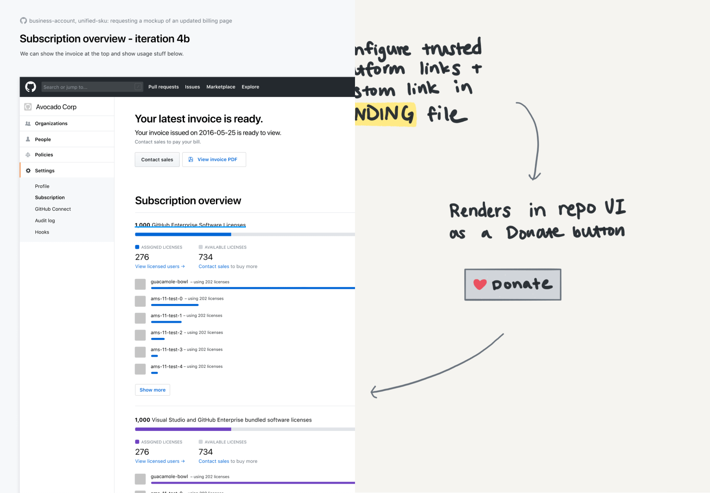

Creating tools, documentation sites, and core components for Primer, GitHub’s open source design system.
Design Systems Intern
June 2019 to August 2019
Primer is GitHub’s open source design system, serving as a single source of truth for design resources, tooling, and guidelines. The team not only supports the way design components are used in products, but also their development and maintainence. Our team is also in charge of core UI, making sure that our sites are accessible and responsive.
During the course of my internship, I worked on several projects in progress as well as saw a couple projects to completion. Because of GitHub’s great open source culture, I’m happy that I can share some of these projects so soon.
Prototyping is an essential part of the Product Designer workflow at GitHub. Given the nature of the product, most designers work heavily in Figma for exploration before moving directly into code to prototyping. However, the fidelity of Figma work among designers can differ drastically.
While high fidelity prototypes allowed designers to use our UI components, sometimes these prototypes look too polished. Using high fidelity components also required designers to detach them if they wanted to explore new modifications. This process was limiting to creative freedom.
On the other hand, low fidelity prototypes excelled at letting designers think about features at the highest level without being bound by details. However, moving from low fidelity tools like sticky notes to interactive prototypes was difficult since these sticky notes didn’t correlate to GitHub UI. This made developer handoff much more difficult.
There's not been a consistent set of tools to explicitly state that a design is in it's beginning/rough stages. Designers often end up using our high fidelity components or finding different ways to make the UI look less ‘polished’ or final. We wanted a solution that would:
✅ Reduce detaching
✅ Create a set of medium fidelity assets
✅ Create a starting point for new projects
✅ Allow explorations using GitHub UI
The driving statement that pushed forward our ideation was that structure should be complemented with flexibility. In order to accomplish this, we came up with two different types of elements.
The components classification was given to elements that are smaller and resuable, just like the components being used in high fidelity prototypes – except this time in a lower fidelity. These elements aren’t meant to be changed, but can be hidden/removed. They visually resemble grayscale GitHub UI.

The frames classification was given to elements that are larger and might be components in a high fidelity mockup. However, at the exploration stage, these elements are meant to be changed. They’re detached by default and sometimes have hidden elements for designers to show/hide based on the needed level of fidelity. Frames also might contain some of the components shown above.

After creating our initial prototyping pages, we asked the Product Design team for feedback on what would help them the most. We received some very valuable feedback that helped us improve the pages to a point where they could be most effectively used.

The prototyping pages were a great experience in learning the workflow and asynchronous communication used within GitHub’s design team. You can check out the file below:
If you’d like to know more about my other work at GitHub, please contact me and let’s grab some coffee.